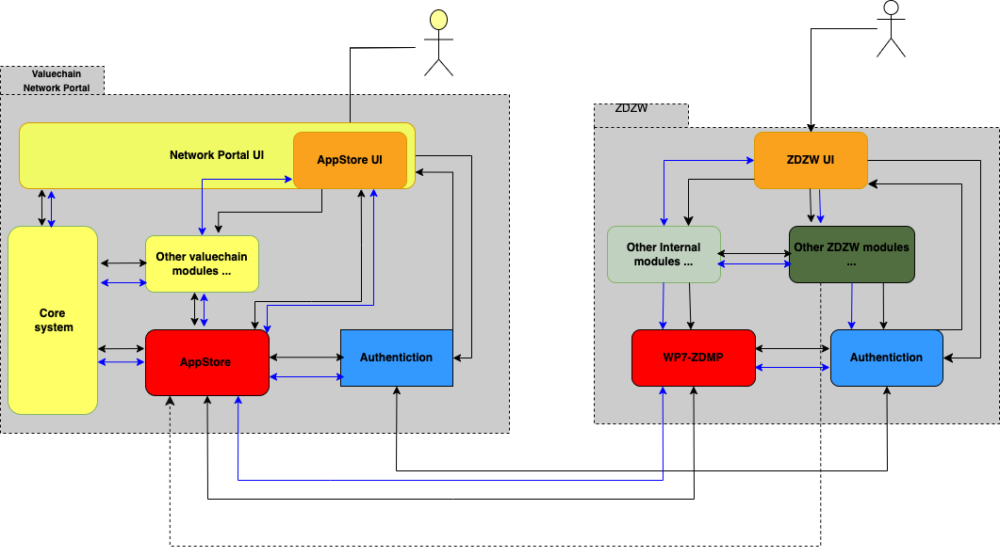
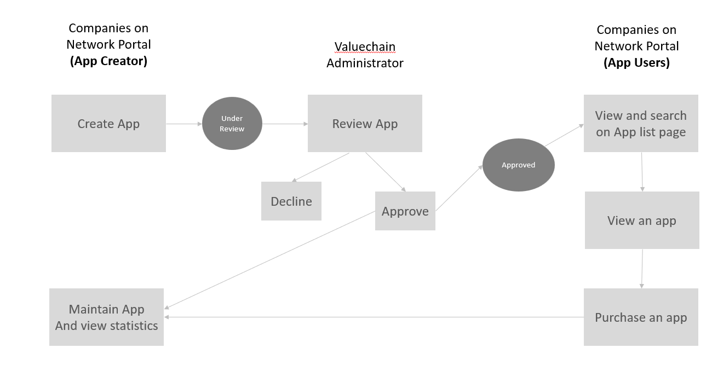
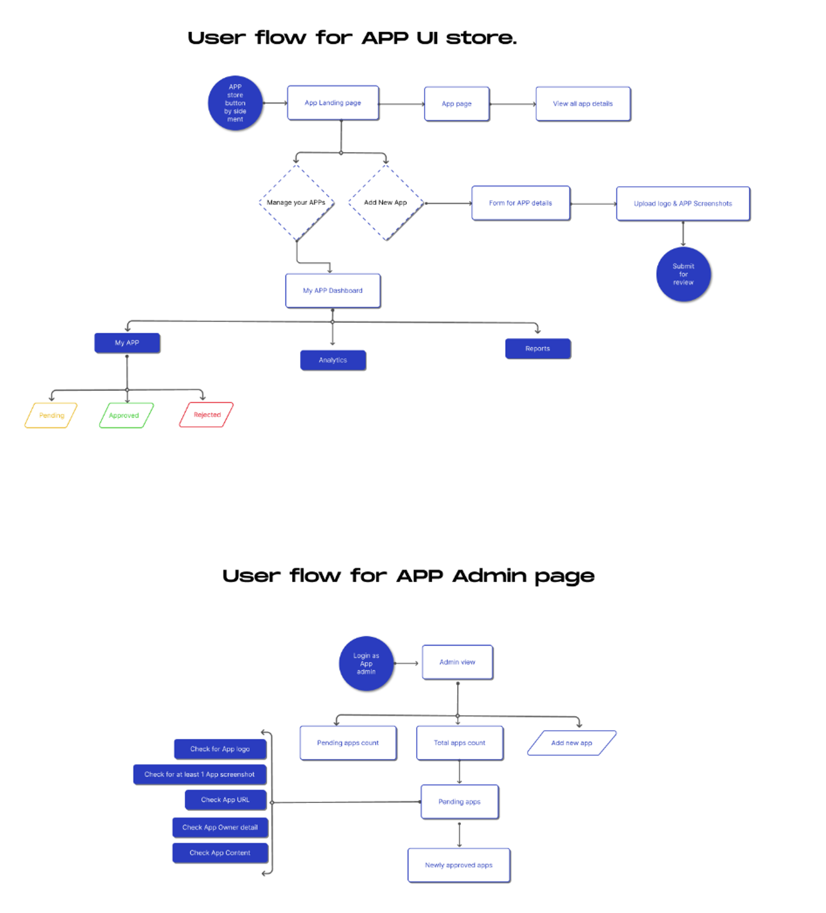

Valuechain AppStore
General Description
The Valuechain AppStore is part of Valuechain's Network Portal platform. Network Portal is a dynamic networking platform that offers cluster and network management. insights. and streamlined communications. The portal captures intelligence and promotes collaboration with easy two-way communications features. Its AppStore will make various applications avialble to its users/cpmpanies/clusters to help improve productivity and efficiency.
The Valuechain AppStore will interlink with ZDZW (and its marketplace). adding value to extend ZDZW to Valuechain's existing commercialised platform where manufacturing companies and industry associations were already using the platform on day-to-day basis. It will allow end-users to utilise the unique offerings (services/tools/applications/products) from both Valuechain and ZDZW seamlessly.
Top Ten Functionalities
- Adapt Valuechain AppStore to allow unregistered user to see products/tools/services/applications
- Integration with ZDZW to avoid login/register for both marketplace/AppStote
- API to interlink with ZDZW marketplace
- Create/upload/link/edit/de-activate/delist a product/tool/service/application in AppStore
- List and filter the products in the Valuechain AppStore by categories
- Search in Valuechain AppStore
- Allow supplier(seller) add/edit company information to the Valuechain AppStore as interested buyers/customers may want to check their public information. Similar for the customer who want to buy. they can add company information to VLC Marketplace which might help them find what they need via VLC network portal's recommendation engine.
- Integration of the Stripe (e.g. connect user Stripe account when they register app so that they can receive payments via Stripe Connect). if commission needs to be automatically calculated. the transaction flow will be clarified. implemented and tested when implementing stripe integration.
- Provide VLC AppStore documentation and instructions to help users with the product creation/upload workflow
- Logging transactions -- Could be integration with the ZDZW blockchain logging service for the app usage/purchase transitions, or Valuechain AppStore's tracking logs)
note: Marketplace and AppStore are interchangeable in terms of the WP7 marketplace development
Architecture Diagram
The high level Architecture diagram from the Sofware Specification document  Figure 1
The indicative work flow (based on different user role) on Valuechain's Network Portal.  Figure 2
The following digram demonstrates the workflow of app publisher and app admin respectively.  Figure 3
Image Overview
The following are the new UI (captured from Valuechain Network Portal test server at the end of Feb 2024).
 Figure 4
Figure 4
Hardware Components
N/A as Valuechain AppStore is deployed on Miscrosoft Azure along with its commerical platform
Computation Requirements
N/A as Valuechain AppStore is deployed on Miscrosoft Azure along with its commerical platform
Installation Procedure
Valuechain's AppStore is delpyed with Valuechain Network Portal on the cloud server serving as SaaS based application.
How To Use
note: details on how to access the AppStore will be added later once UI implementation is completed * For accessing Valuechain Network Portal directly: * Testing Environment https://test.valuechain.com/Login * Production Environment https://my.valuechain.com/Login
- For interlinking in the backend, the following APIs are used. Corresding API access document has been shared with WP7 partners (task T7.2 and T7.3).
- Testing Environment https://testapi.valuechain.com
- Production Environment https://api.valuechain.com
Additional Learning Materials
Links to other learning materials like youtube tutorials or work from WP10